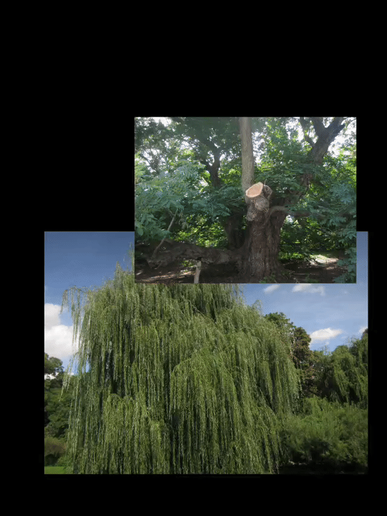
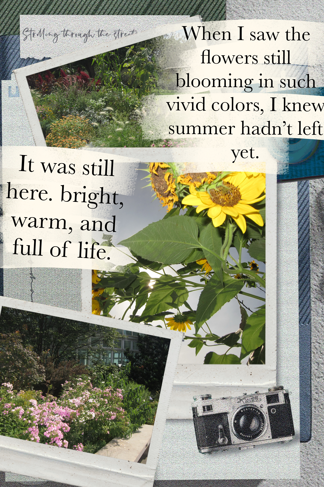

Before Summer Fades
Sptember 5, 2026
The weather was still warm, but somehow it already seemed that summer was coming to an end. I did not have a specific plan. I just wanted to go somewhere and walk while everything was still green. So, I went somewhere nearby - The Botanic Garden.
Then I came across a lily pond. Most of the flowers were already gone, but one lily was still blooming. I was happy to see it. Summer was still here. But somehow, it also felt like it was about to end.
I kept walking and found myself surrounded by enormous trees. I lay down on the grass for a while, feeling the warmth of the sunlight on my skin and the fresh smell of the grass around me. I didn't want to go anywhere. I just wanted to stay there for a little longer.

I felt a little disappointed. Summer really seemed to be fading away. But when I looked up and looked ahead, I saw flowers everywhere pink, yellow, purple, red. So many colors were still blooming in front of me.

Deeper inside the garden, I found a small house. When I walked closer, I realized it was a Children's Garden. It said on the board that every year, children come here to plant flowers and watch them grow. I started to think that maybe this is how they keep summer with them not by stopping it from ending, but by growing it again every year.
In the end, I followed the path and slowly walked out of the garden. I came here looking for traces of summer, hoping that somehow I could hold on to it a little longer. But this garden made me realize that I don't need to keep the past from leaving. Seasons come and go. Flowers wilt but blossom again. Perhaps, instead of holding on to what was coming to an end, I should welcome what was to come.